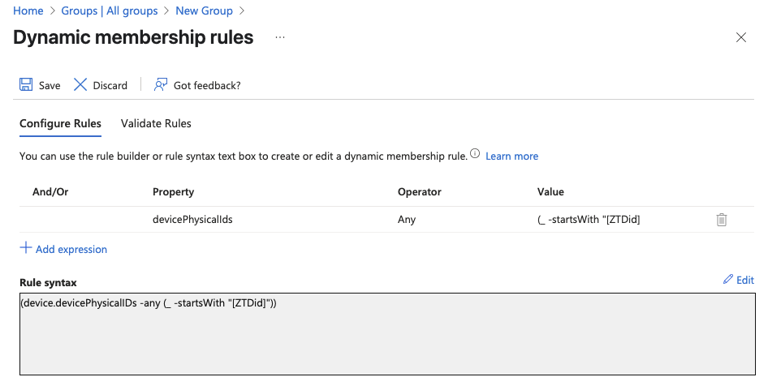
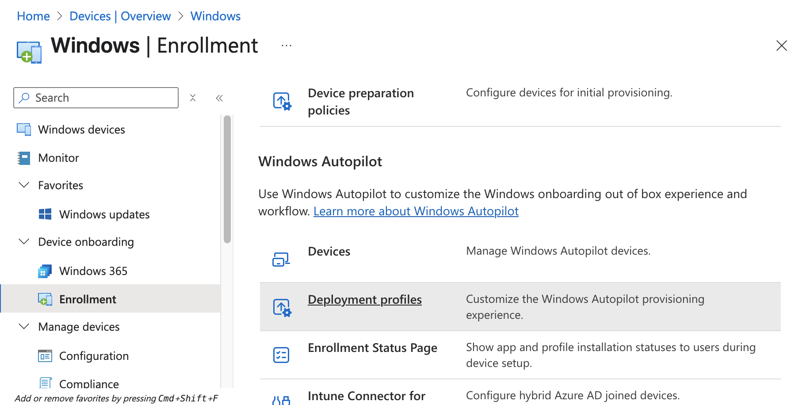

Day 1: Windows Autopilot User-Driven Mode¶
📌 Today we will discuss about Windows Autopilot with User-Driven Mode. This article provides an overview and step-by-step guidelines to perform a Windows Autopilot user-driven scenario when the devices are strictly Microsoft Entra joined.
Link: https://learn.microsoft.com/en-us/autopilot/tutorial/user-driven/azure-ad-join-workflow

I. Theory¶
- 1/ What is autopilot user-driven mode
Device is used by a single user
User-run deployment
Autopilot User-Driven Mode lets end users set up their devices themselves with minimal IT involvement. After turning on the device and signing in, the device automatically joins the organization, enrolls in Intune, and applies company policies — ready for use.
- 2/ When do we use user-driven mode
- The device will be delivered directly to the end users without IT intervention
Requires no interaction from IT team/OEM/reseller.
The device will be used primarily by a single user
Doesn’t require [TPM attestation](https://learn.microsoft.com/en-us/windows-server/identity/ad-ds/manage/component-updates/tpm-key-attestation), so it works on physical devices and VMs.
II. Deployment¶
Step 1: Set up Windows automatic Intune enrollment¶
1/ Sign in to the EntraID
2/ In theÂ
EntraIDscreen > search the keywordMDM and WIP,click onMDM and WIP3/ In
Mobility (MDM and WIP)> choose ``Microsoft Intune`4/ In Microsoft Intune
5/ After settings like the picture above, select
Save
{kind=link}
{kind=link}
{kind=link}
{kind=link}
{kind=link}
Step 2: Allow users to join devices to Microsoft Entra ID¶
1/ Sign in to theÂ
`Microsoft Entra ID. <https://entra.microsoft.com>`_2/ In theÂ
EntraID screen, underÂIdentity in the left hand pane, selectÂDevices.3/ In theÂ
Devices | Overview screen, underÂManage in the left hand pane, selectÂDevice Settings.4/ In theÂ
Devices | Device settings screen that opens, underÂUsers may join devices to Microsoft Entra, selectÂAll5/ After settings > select
Save
{kind=link}
{kind=link}
{kind=link}
{kind=link}
Step 3: Create a device group¶
Create a dynamic device group for use with Windows Autopilot
1/ Sign into the Microsoft Intune admin center.
2/ In the Intune Admin Portal, selectÂ
Groups,then selectAll groups3/ In the
Groups | Overviewscreen, make sureÂAll groups is selected, and then selectÂNew group.3/ In theÂ
New Group screen that opens:
ForÂ
Group type, selectÂSecurity.ForÂ
Group name, enter a name for the device group [All Autopilot Device]ForÂ
Group description > skipForÂ
Microsoft Entra roles can be assigned to the group, selectÂNo.ForÂ
Membership type, selectÂDynamic Device.ForÂ
Owners >skipForÂ
Dynamic device members, selectÂAdd dynamic query. TheÂDynamic membership rules screen opens.
4/ In theÂ
Dynamic membership rules screen4.1/ at the Rule syntax box, select edit at the top-right hand side

4.2/ Paste in the following rule in theÂ
Edit rule syntax screen underÂRule syntax(device.devicePhysicalIDs -any (_ -startsWith “[ZTDid]”))
4.3/ Once the rule is pasted in, selectÂ
OK.4.4/ Once the desired rule is entered, selectÂ
Save on the toolbar to close theÂDynamic membership rules window.5/ SelectÂ
Create to finish creating the dynamic device group.
6/ Wait until the notification is successful

{kind=link}
{kind=link}
{kind=link}
{kind=link}
{kind=link}
Step 4: Configure and assign Windows Autopilot Enrollment Status Page (ESP)¶
What is ESPESP is often configured to wait for only specific apps (instead of all), so users can get to the desktop faster.
A. Upload A Package App1/ Visit the link here: Zoom Installers
2/ Download Zoom workspace desktop app for Meeting (64bit)- MSI Installer Or using the link here: https://zoom.us/client/latest/ZoomInstallerFull.msi?archType=x64
3/ Sign in to the Microsoft Intune admin center.
4/ SelectÂ
Apps >ÂApps | Overview >ÂWindows.5/ In
Windows | Windows Apps,selectCreate6/ In theÂ
Select app type pane, under theÂOther app types, selectÂLine-of-business app.7/ SelectÂ
Select. TheÂAdd app steps are displayed.
8/ In theÂ
Add app pane, selectÂSelect app package file.9/
UploadtheZoomMSIfile downloaded recently, selectOK10/ In App information, select
Next
Name:
ZoomDescription:
skipPublisher:
ZoomApp install context:
DeviceIgnore app version:
NoCommand-line arguments: /qn
Upload Logo
The other fields:
skip
11/ At the
scope tagsscreen, selectNext12/ At the Assignments screen, Assign to the desired group, select
Next12.1/ At the
Required header,selectadd group12.2/ Enter [
All Autopilot Device], Checkbox, clickSelect12.3/ Ensure the target group is there, select
Next13/ At the review + Create tab, select create
14/ Wait until the uploading zoom is completed
15/ Wait until the uploading process is successful
B. Create ESP Profile1/ Sign into the Microsoft Intune admin center.
2/ In theÂ
Home screen, selectÂDevices in the left hand pane.3/ In theÂ
Devices | Overview screen, underÂManage devices by platform, selectÂWindows.
4/ In theÂ
Windows | Windows devices screen, underÂDevice onboarding, selectÂEnrollmentat the left pane side.5/ In theÂ
Windows | Windows enrollment screen, underÂWindows Autopilot, selectÂEnrollment Status Page.6/ In theÂ
Enrollment Status Page screen that opens, selectÂCreate.
7/ TheÂ
Create profile screen opens. In theÂBasics page:
Next toÂ
Name, enter [ESP - Autopilot User-Driven Mode]Next toÂ
Description,skipSelectÂ
Next.
8/ In theÂ
Settings page, toggle the optionÂShow app and profile configuration progress toÂYes.8.1/ After toggling the setting to Yes > configure these settings following
Show an error when installation takes longer than specified number of minutes:
60Show custom message when time limit or error occurs:
Yesin the box message: [Installation exceeded the time limitation set by your organization. Please try again or contact your IT support person for help]
8.2/ After entering the message > turn on these settings below
Turn on log collection and diagnostics page for end users:
YesOnly show page to devices provisioned by out-of-box experience (OOBE):
YesBlock device use until all apps and profiles are installed:
YesAllow users to reset device if installation error occurs:
YesBlock device use until required apps are installed if they are assigned to the user/device: Selected
8.2/ After choosing [
selected] mode > click on+select apps8.3/ At the
Select apps> searchZoom> Click on Zoom andselect8.4/ Ensure
Zoomis listed in theBlocking appslist > selectNext8.5/ After adding Zoom, at [Only fail selected blocking apps in technician phase] > Select
No >then selectNext9/ at
Assignmenttab > clickadd groups9.1/ At the select groups to include
Search [
All autopilot device]
Checkboxand clickSelect10/ Ensure the target group is listed in the list, select
Next11/ At the scope tags, select
Next12/ At the
Review and createtab, selectCreate13/ Waiting until the notifications shows
[profile successfully created /assigned]
{kind=link}
{kind=link}
{kind=link}
{kind=link}
{kind=link}
{kind=link}
{kind=link}
{kind=link}
{kind=link}
{kind=link}
{kind=link}
{kind=link}
{kind=link}
{kind=link}
{kind=link}
{kind=link}
{kind=link}
{kind=link}
{kind=link}
{kind=link}
{kind=link}
{kind=link}
{kind=link}
{kind=link}
{kind=link}
{kind=link}
{kind=link}
{kind=link}
{kind=link}
Step 5: Create and assign Windows Autopilot profile¶
1/ Sign into the Microsoft Intune admin center. 2/ In theÂ
Home screen, selectÂDevices in the left hand pane.3/ In theÂ
Devices | Overview screen, underÂBy platform, selectÂWindows.4/ In theÂ
Windows | Windows devices screen, underÂDevice onboarding, selectÂEnrollment.5/ In theÂ
Windows | Windows enrollment screen, underÂWindows Autopilot, selectÂDeployment Profiles.6/ In theÂ
Windows Autopilot deployment profiles screen, select theÂCreate Profile drop down menu and then selectÂWindows PC.
- 7/ TheÂ
Create profile screen opens. In theÂBasics page:
Next toÂ
Name: [DeployProfile - Autopilot User-Driven Mode]Next toÂ
Description
Next.
8.1/ In theÂ
Out-of-box experience (OOBE)Â page:
ForÂ
Deployment mode, selectÂUser-driven.ForÂ
Join to Microsoft Entra ID as, selectÂMicrosoft Entra joined.ForÂ
Microsoft Software License Terms, selectÂHideForÂ
Privacy settings, selectÂHide8.2/ In theÂ
Out-of-box experience (OOBE)Â page:
ForÂ
Hide change account options, selectÂHide.ForÂ
User account type, selectAdministrator.ForÂ
Allow pre-provisioned deployment, selectÂNo.For
Language (Region): SkipFor
Automatically configure keyboard: NoFor
Apply device name template: UserDr-%SERIAL%Next

9/ In theÂ
Scope Tagstab, selectNext
- 10/ In theÂ
Assignments tab
UnderÂ
Included groups, selectÂAdd groups.
select the group that created in the
Step 3 [All Autopilot Device]
Next
11/ In theÂ
Assignments,clickCreate
12/ Wait until the notification is successful
{kind=link}
{kind=link}
{kind=link}
{kind=link}
{kind=link}
{kind=link}
{kind=link}
{kind=link}
{kind=link}
III. Admin Workflow¶
Before a device can use Windows Autopilot, the device must be registered as a Windows Autopilot device.
Registering a device as a Windows Autopilot device makes the Windows Autopilot service available to the device.
Step 1: Register devices as Windows Autopilot devices¶
We use the [upload hardware directly] method to register a target device into autopilot service
- 1/ On a device that is currently undergoing Windows Setup and OOBE:
At the select country and region screen, press keysÂ
Shift+F10.
The command prompt window will open

In the cmd windows, open PowerShell by running the following command:
PowerShell Command¶powershell.exe
- 2/ At the PS PowerShell command prompt, run the following PowerShell commands:
PowerShell
PowerShell Command¶Set-ExecutionPolicy -Scope Process -ExecutionPolicy RemoteSigned Install-Script -Name Get-WindowsAutopilotInfo -Force
If prompted to do so, agree to installÂ
NuGet from theÂPSGallery,enterYes(Y)
After install the module, run the commands below
PowerShell Command¶cd 'C:\Program Files\WindowsPowerShell\Scripts\' powershell.exe -execution bypass Get-WindowsAutopilotInfo.ps1 -Online
3/ When the last command of Get-WindowsAutopilotInfo -Online runs, a Microsoft Entra ID sign-on prompt is displayed. Sign in with an account that is at least an Intune Administrator.


4/ After the sign-in is successful, the device hash uploads automatically.

5/ Make sure that uploading hash is successful
Step 2: Verify device has a Windows Autopilot profile assigned to it¶
1/ Sign into the Microsoft Intune admin center.
2/ In theÂ
Home screen, selectÂDevices in the left hand pane.3/ In theÂ
Devices | Overview screen, underÂBy platform, selectÂWindows.4/ In theÂ
Windows | Windows devices screen, underÂDevice onboarding, selectÂEnrollment.5/ In theÂ
Windows | Windows enrollment screen, underÂWindows Autopilot, selectÂDevices.6/ In theÂ
Windows Autopilot devices screen, selectÂSync in the toolbar.7/ Wait for the sync to finish. The sync might take several minutes.

8/ After the sync completes > Search the serial number of target device at the search bar

9/ Make sure the profile status is assigned like the picture above
{kind=link}
{kind=link}
{kind=link}
{kind=link}
{kind=link}
{kind=link}
IV. User Workflow OR User experience¶
Registering a device as a Windows Autopilot device just makes the Windows Autopilot service available to the device.
Registering a device as a Windows Autopilot device doesn’t mean that the device has used the Windows Autopilot service. It just makes the Windows Autopilot service available to the device.
Step 1: `Deploy the device¶
- Power on the device.
The out-of-box experience (OOBE) begins and a screen asking for a country or region appears. Select the appropriate country or region, then selectÂ
Yes.
The keyboard screen appears to select a keyboard layout. Select the appropriate keyboard layout, then selectÂ
Yes.
An additional keyboard layouts screen appears, selectÂ
Skip
TheÂ
Let's connect you to a network screen appears. At this screen, either plug the device into a wired network (if available), or select and connect to a wireless Wi-Fi network.
Once network connectivity is established, theÂ
Next button should become available. SelectÂNext.At this point, the device might reboot to apply critical security updates (if available or applicable). After the reboot to apply critical security updates, the Windows Autopilot process begins.
Once the Windows Autopilot process begins, the Microsoft Entra sign-in page appears, Sign-in with your
org account,selectSign in
- After authenticating with Microsoft Entra ID, the Enrollment Status Page (ESP) appears. The Enrollment Status Page (ESP) displays progress during the provisioning process across three phases:
Device preparation (Device ESP)Device setup (Device ESP)Account setup (User ESP)
The first two phases ofÂ
Device preparation andÂDevice setup are part of the Device ESP while the final phase ofÂAccount setup is part of the User ESP.
OnceÂ
Account setup and the user ESP process completes, the provisioning process completes, the ESP finishes, and the desktop appears. At this point, the end-user can start using the device.
Ensure the device already has the Zoom app installed, you can see it it the desktop screen Day 1: Windows Autopilot User-Driven Mode

{kind=link}
{kind=link}
{kind=link}
{kind=link}
{kind=link}
{kind=link}
{kind=link}
{kind=link}